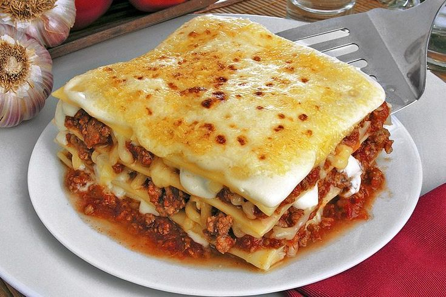

Escolha sua favorita e tente você mesmo!

Lasanha à Bolonhesa
keyboard_arrow_downReceita favorita de Davi
Ingredientes:
- Molho Bolonhesa:
- 500g de carne moída
- 2 colheres de sopa de azeite
- 1 cebola picada
- 2 dentes de alho picados
- 500ml de molho de tomate ou 2 latas de tomate pelado
- 1 colher de sopa de extrato de tomate
- 1 colher de chá de açúcar
- Sal e pimenta-do-reino a gosto
- 1 colher de chá de orégano ou manjericão seco
- Montagem:
- 250g de massa para lasanha (pré-cozida ou fresca)
- 300g de queijo mussarela
- 100g de queijo parmesão ralado
Modo de Preparo:
- Molho Bolonhesa:
- Aqueça o azeite em uma panela, refogue a cebola e o alho até dourarem.
- Adicione a carne moída e cozinhe até que ela fique dourada e soltinha.
- Acrescente o molho de tomate, o extrato de tomate, o açúcar e os temperos. Deixe cozinhar em fogo baixo por 20 minutos, mexendo ocasionalmente.
- Montagem:
- Preaqueça o forno a 180°C.
- Em um refratário, espalhe uma camada fina de molho bolonhesa no fundo.
- Coloque uma camada de massa para lasanha, cubra com mais molho e uma camada de queijo mussarela.
- Repita as camadas até terminar os ingredientes, finalizando com queijo parmesão por cima.
- Assar:
- Cubra com papel alumínio e leve ao forno por 25 minutos.
- Retire o papel e deixe gratinar por mais 10 minutos.
Média: 0